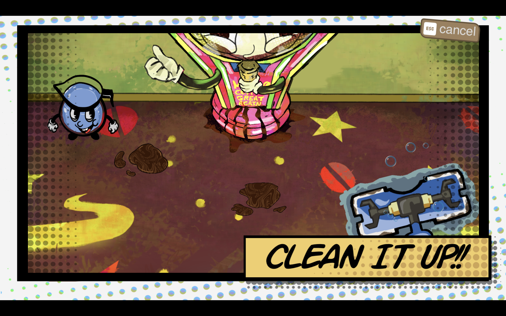
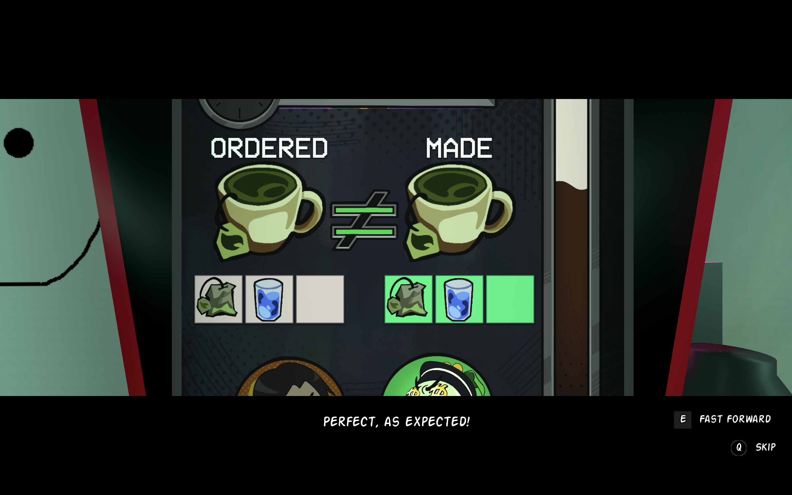
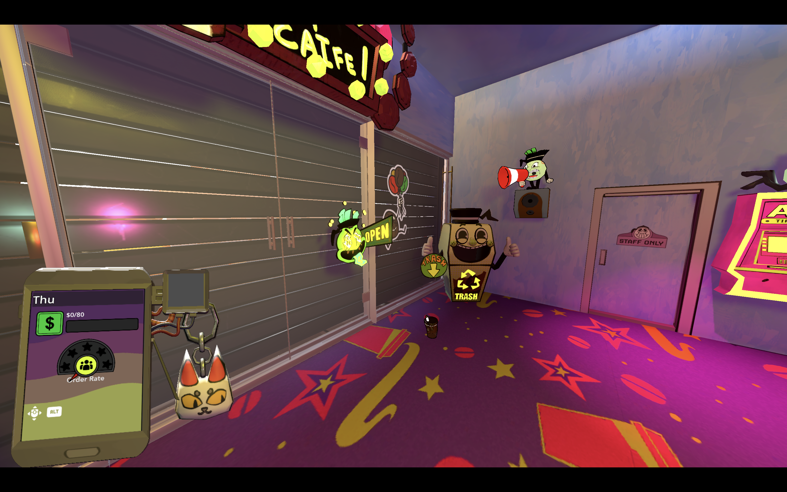

Developed an interactive spill-cleaning minigame in Godot using image manipulation and collision detection, with real-time progress tracking and completion-state logic.

A 3D management simulation game developed in Godot. Players take on the role of a café employee facing replacement by AI and must fight to keep their job.
Developed an interactive spill-cleaning minigame in Godot using image manipulation and collision detection, with real-time progress tracking and completion-state logic.


Built a state-driven tutorial system coordinating UI prompts, player interactions, and progression logic to guide users through core gameplay mechanics.
Refined the "throwing trash" mechanic and its visual presentation by using an X-ray effect to highlight key elements, enhancing the visuals with special effects, and incorporating cartoon-style animations.
